原文连接:https://www.cnblogs.com/L-Wirepuller/p/11708346.html
目录
开发编辑三两事
前言
本篇文章旨在提高开发效率，不为挑起业内争端，望侠客勿喷！为了保持中间立场，本文将避开讨论：编辑器之神(Vim)与神的编辑器(Emacs)。如果您是二者中任一阵营，请直接跳过本文！
IntelliJ IDEA
IntelliJ在业界被公认为最好的java开发工具(来自百度百科)
近年来越来越多的Java开发者从Eclipse转战Idea，足以见其名声在外；而鲜有人从Idea改为Eclipse，也说明它的确优秀。
使用过的人都知道，Idea的智能提示，着实感人。而它的后缀补全功能，更是极大程度提升了开发效率，配合一下常用插件。分分钟成为办公室最靓的崽~基础用法及常用插件自行Google，此处只演示部分后缀补全功能，因经私下调查，发现知道此功能的人，寥寥无几......
.var == 声明
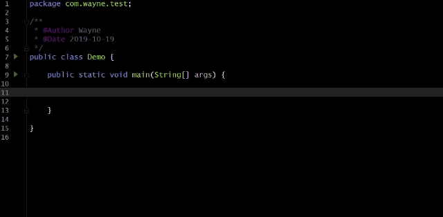
.null == 判空
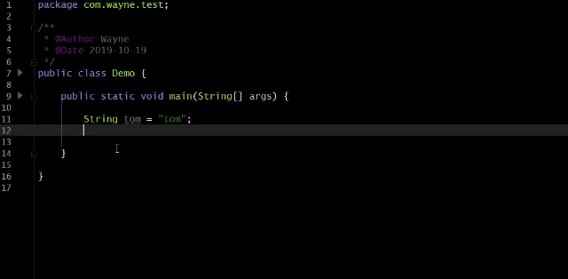
.for == 迭代
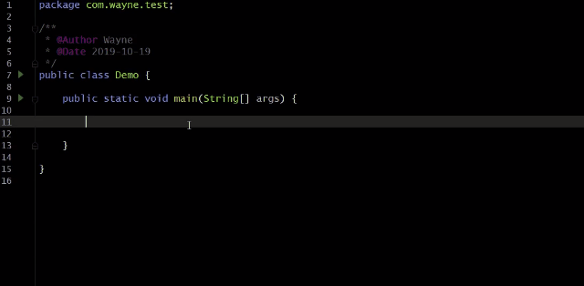
.return == 返回
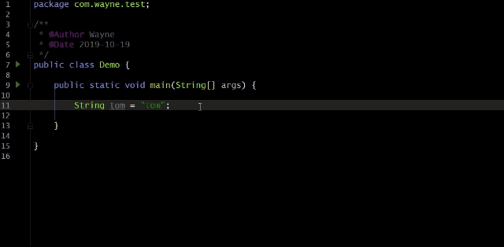
Notepad++
免费、开源、中文
Notepad++功能可以说非常强大，称得上是一款高级文本编辑器，支持插件扩展，其官网有对应插件库。当我们需要打开单个源码文件的时候，使用notepad++来打开，还是非常方便的，因为其比较轻量，响应速度快，而且其对大部分语言也支持高亮提示(颜色字体可配置)，UI如下：
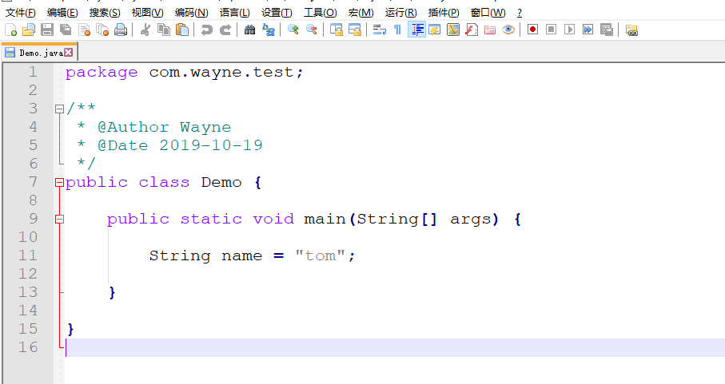
本文选其两个功能简单介绍:
Notepad++远程服务器修改文件
身为开发，工作中难免会遇到需要在Linux系统上修改文件的场景，如果是不熟悉Vim命令的同学，一顿操作下来，简直半条命都交给了林纳斯·托瓦兹(Linux之父)。甚至还有一部分同学，就只能把文件拖到本地修改，改完再放到服务器上了......使用Notepad++，这种问题就不会发生了
安装NppFTP插件，点击插件 --> 插件管理
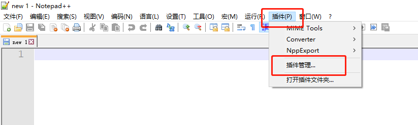
搜索NppFTP勾选并安装，如遇下载失败情况，可多次尝试，或手动下载然后将其放到notepad++安装目录下的plugins文件夹下

安装完成后，点击插件，找到NppFTP，点击Show NppFTP Window
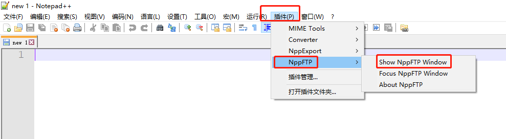
此时界面分为两部分，点击Profile settings
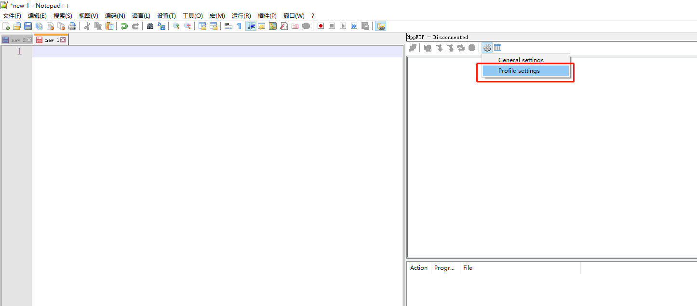
从左到右、从上到下，依次填写，Hostname填写服务器地址，填写完成之后点击Close
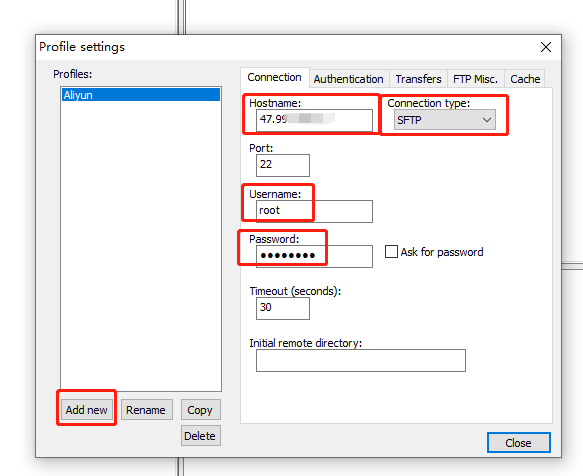
点击下图图标，找到我们上一步配置的Profile并点击。从此，修改Linux下Nginx配置，就是如此简单~~~
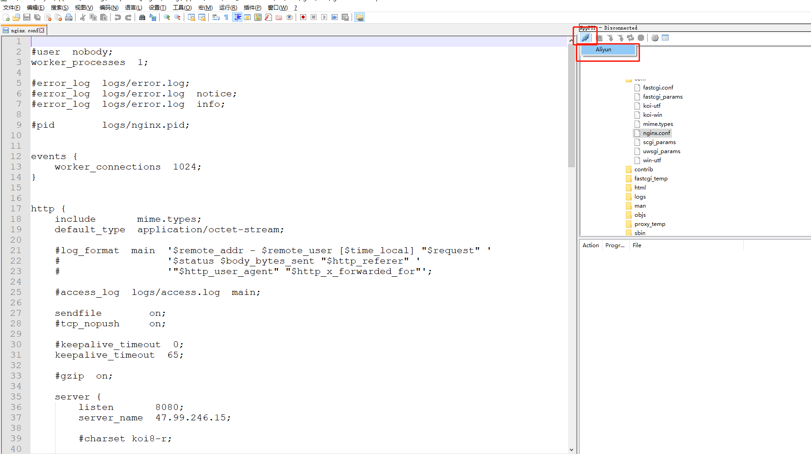
Notepad++对比文件差异
此功能之前出过一篇文章，详情请参考
VS Code
微软出品、必属精品
感觉主流用来做前端开发多一些(未做调研，大胆猜测)
完善的插件库，听说配合强大的插件库，写Java也无压力(期待有人分享心得)
然而这款编辑器在我的电脑中主要用来做两件事：写H5代码，看别人的H5代码。模拟一个场景，当我们读别人少量代码的时候，打开Idea太笨重，用Notepad++又太繁琐，而用VSCode则刚刚好，打开快捷，使用方便~
我们使用cmd跳转到代码存放路径下，通过命令可直接打开文件夹，若是了解cmd快捷键，那简直不要太爽，大大提高了工作效率
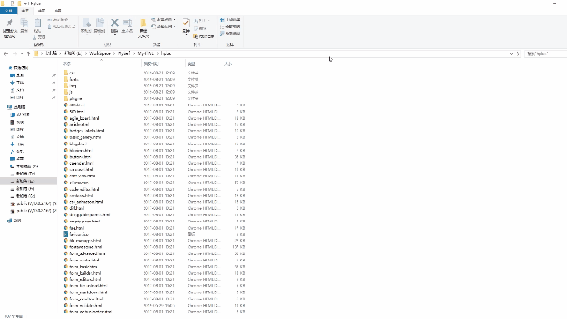
Sublime Text
UI精美，简约而不简单、轻量、不仅如此......
语法高亮、多行操作、插件扩展等等，这些功能且先不说。我们先聊聊它留在我电脑中的主要原因！当我们遇到一些临时的琐事，突发的奇想，迸发的心得等等，这种随机且重要程度不高的事情需要记录的时候，建个文件写进去保存太繁琐，Sublime，打开即写，写完即关，不会提示保存，下次打开内容依旧在，简直不要太舒服。(后来才发现，Notepad++也有此设置，蠢哭......)，不过UI真心不错，相信是符合大多数程序猿的审美的~
Typora
一款精美的Markdown语法编辑器，和传统的
markdown笔记软件相比，Typora别处心裁的使用实时渲染的模式，将markdown格式的文本实时处理后展示给大家，而不是采用左边编辑区，右边渲染区这种割裂使用体验的设计。
Markdown语法的编辑器，多多少少要会一种，很多地方都会用得到。比如GitHub上大多数开源项目的介绍README.MD文件，就是用Markdown语法写的。
以此图为例
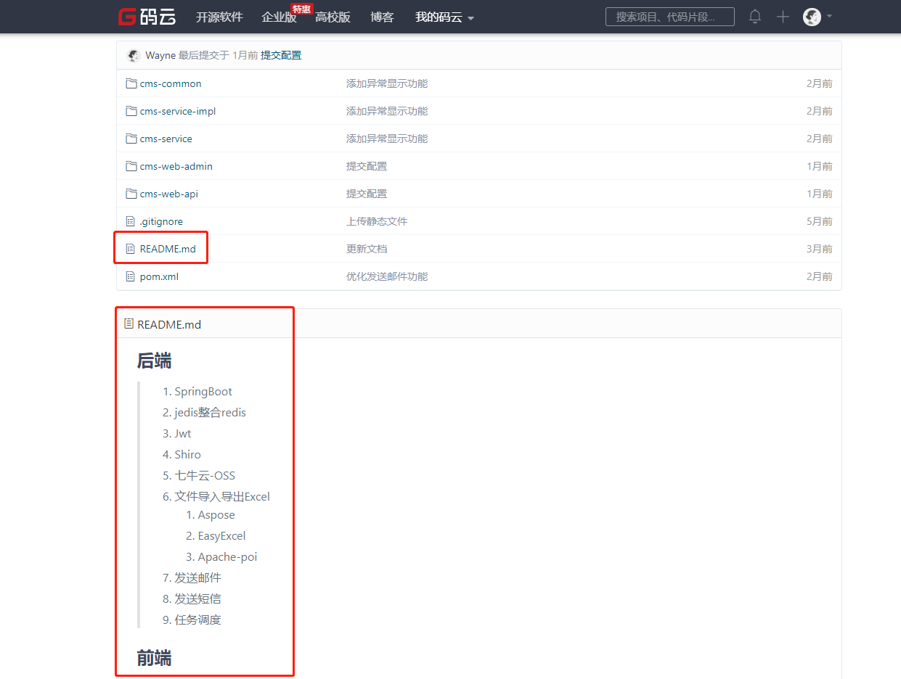
文件可导出PDF,HTML,Word等多种格式~(本篇文章便是用Typora编辑完成)
总结
工欲善其事，必先利其器。
说下目前本人的习惯：开发Idea，看前端代码VSCode，服务器修改Notepad++，临时记录Sublime，正式文件Typora
最后，每个人都有自己的开发习惯，每款编辑器也都有自己的独特之处。编辑器与开发而言，形同与战士手中刃。希望大家都能找到自己契合的编辑器。
本文是站在本人(Java开发)的角度阐述，如有问题，欢迎指正，欢迎大家随时补充~
结束语
本人已开通公众号，欢迎大家前来灌水